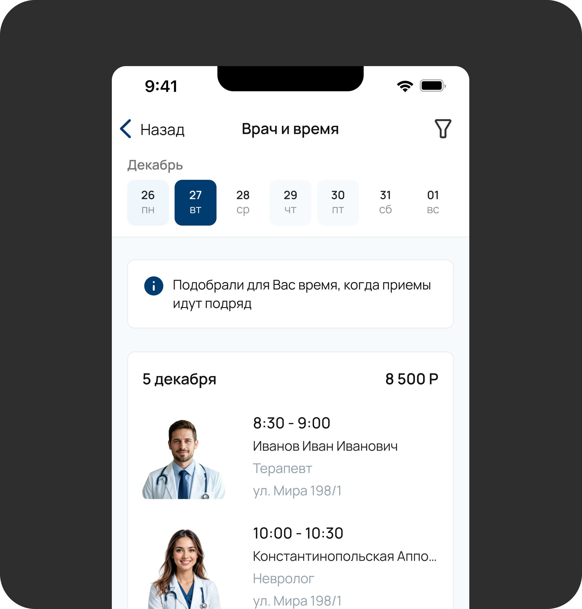
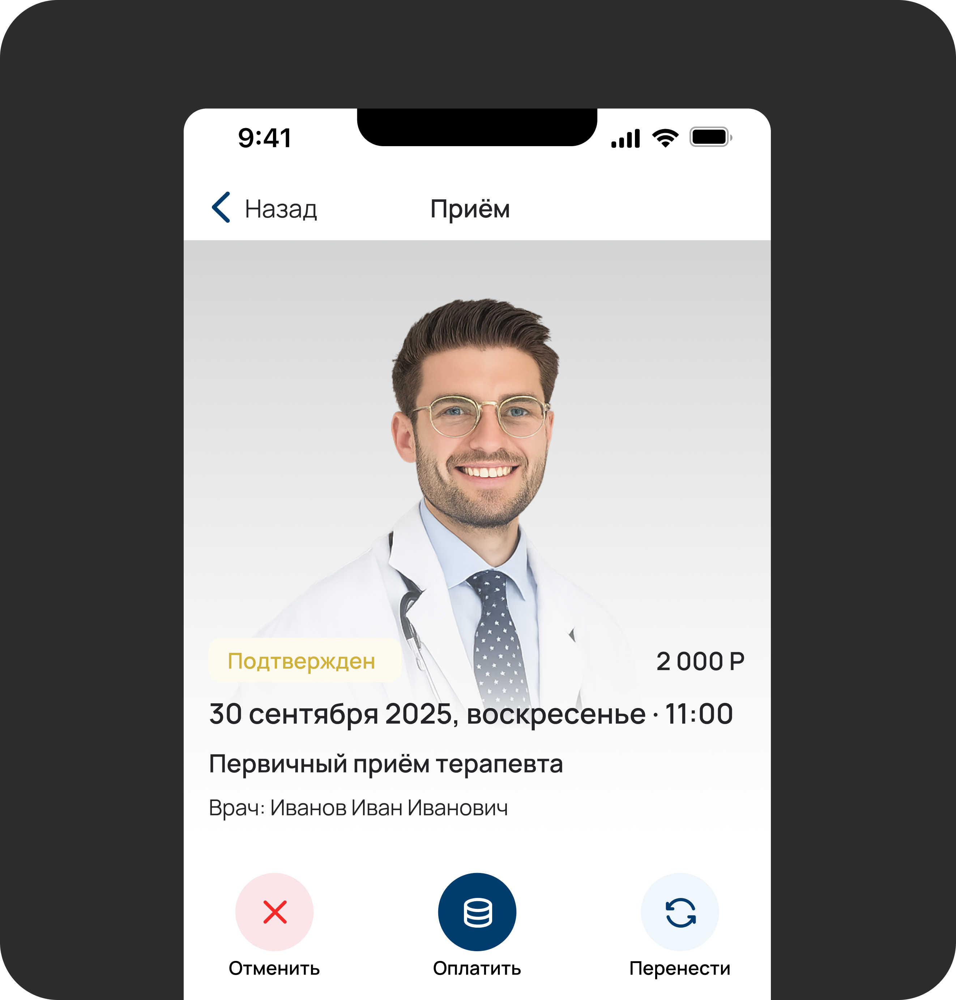
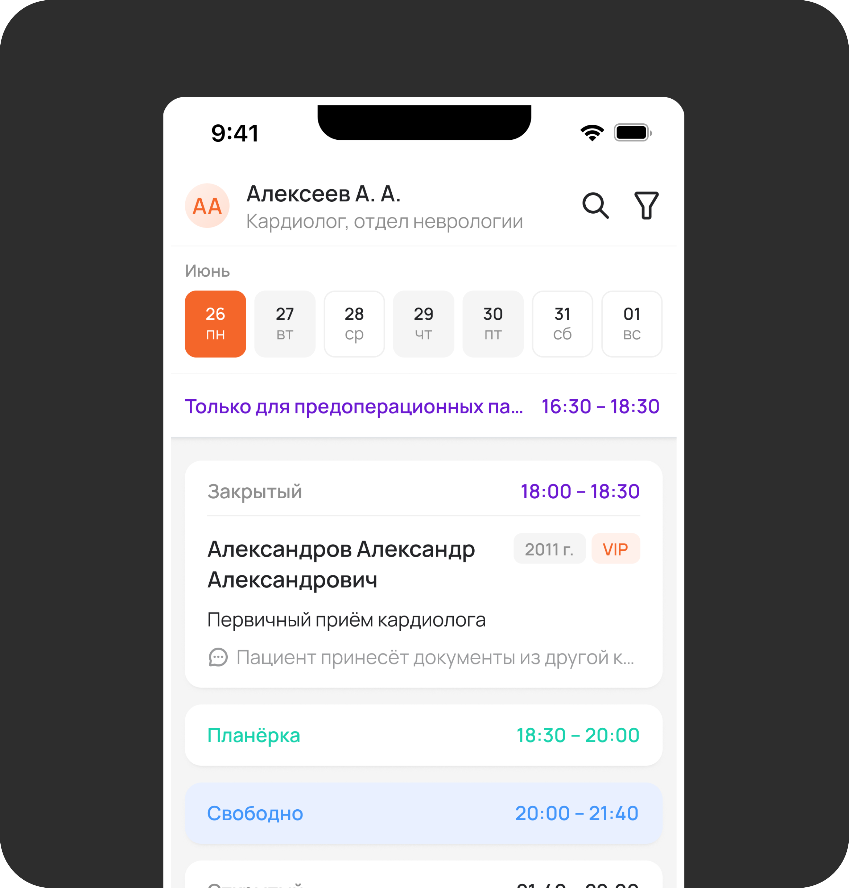
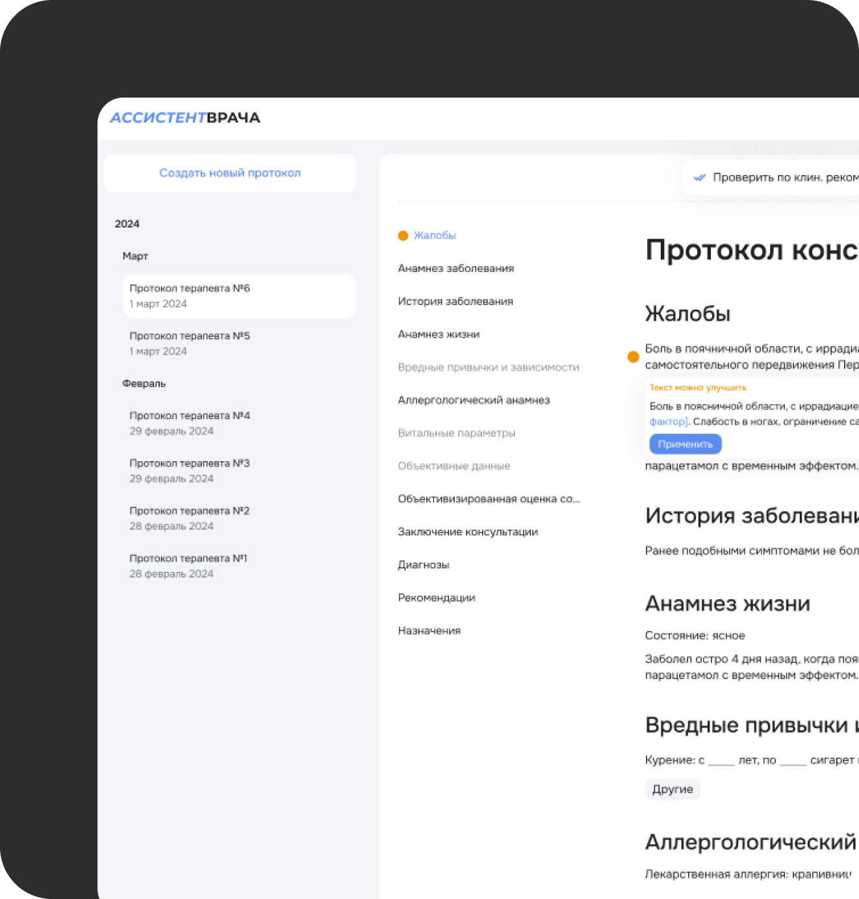
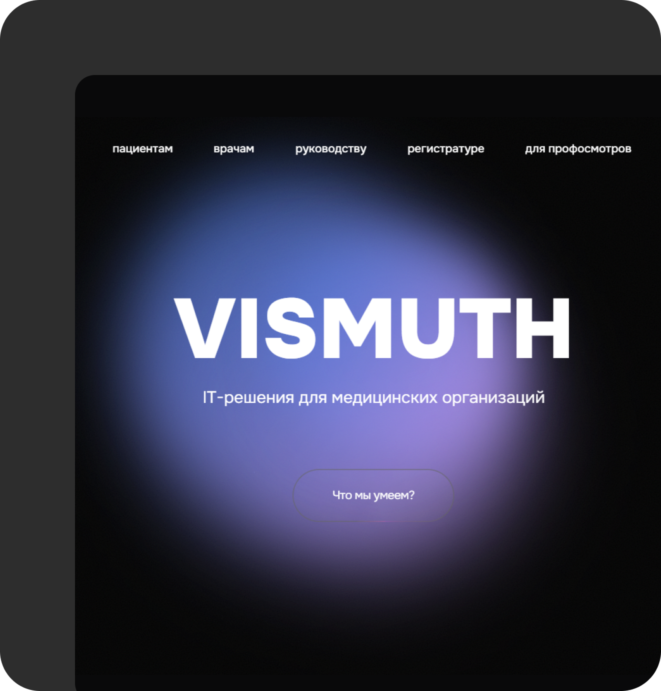
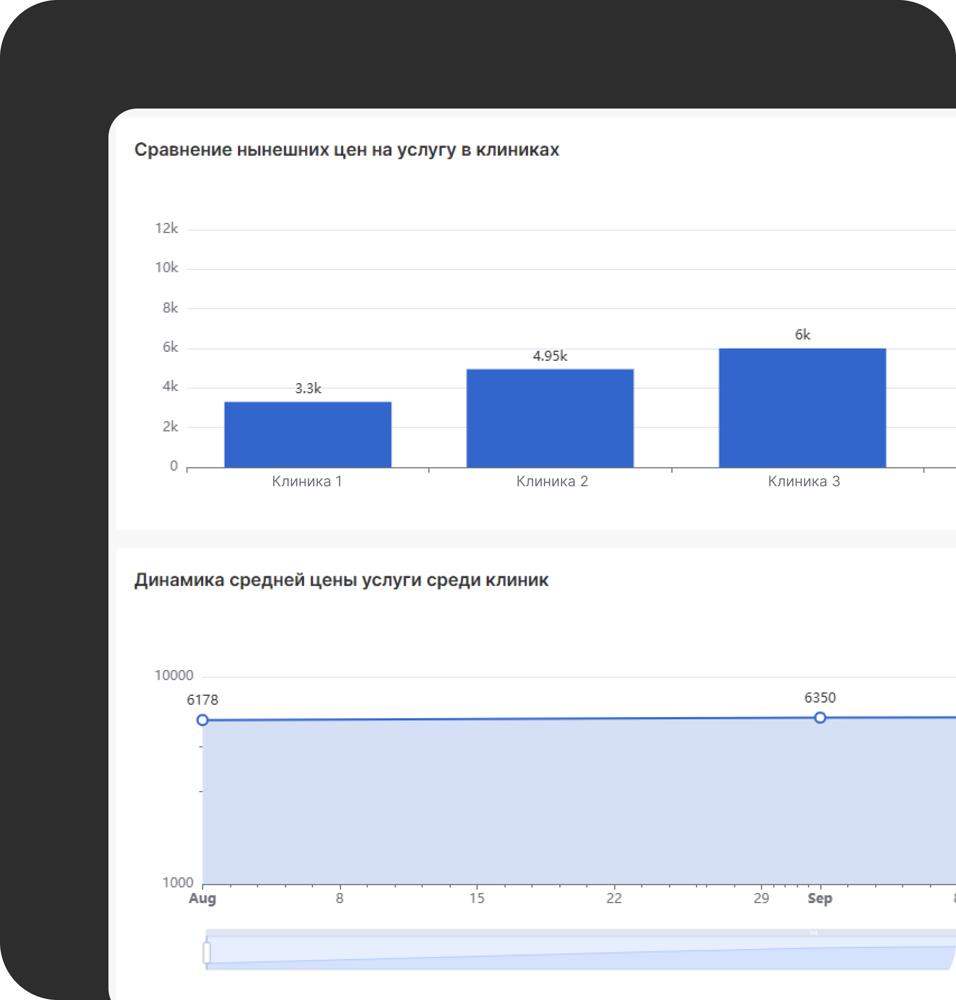

Онлайн-запись на приём
Проблема
Контакт-центр был перегружен — максимальное время ожидания ответа на звонке достигало 40 минут.
Решение
Онлайн-запись на сайте 41 больницы перевела 30% пациентов в цифровой канал. Максимальное время ожидания на звонке сократилось до 15 минут.

Личный кабинет пациента
Проблема
По закону о персональных данных (сентябрь 2025) клиники не могут отправлять результаты анализов на почту — штраф до 1,5 млн ₽. Пациентам приходилось приезжать в клинику лично.
Решение
Личный кабинет для ММЦ СОГАЗ: пациенты подписывают согласие онлайн и получают результаты анализов и приёмов прямо в телефоне, а также записываются на следующие приёмы.

Киоск самообслуживания пациента
Проблема
В час пик на регистратуре скапливалась очередь пациентов с ожиданием до 20 минут, что вызывало раздражение и складывало плохое впечатление о клинике.
Решение
Киоск самообслуживания пациентов в клинике УГМК-Здоровье позволил оплачивать приёмы и печатать талоны без ожидания в очереди. Благодаря этому ожидание снизилось до 5 минут.

Мобильное приложение для врачей скорой помощи
Проблема
Врачам скорой помощи приходилось приезжать на вызов, заполнять протокол на бумаге, возвращаться в клинику и перепечатывать текст в медицинскую систему.
Решение
Мобильное приложение позволило прямо на выезде заполнить протокол со своего телефона и отправить напрямую в медицинскую систему.

Умный ассистент врача
Проблема
Врач во время приёма полагается только на свои знания и может забыть спросить у пациента важную информацию или назначить неправильное лечение.
Решение
Умный ассистент врача с комплексом помощников для снижения риска ошибок и помощи в написании протокола во время приёма.

Сайт ООО «ВИСМУТ»
Проблема
У компании был ряд продуктов, о которых клиенты узнавали только в результате холодных звонков.
Решение
Сайт компании, благодаря которому клиенты могут ознакомиться с продуктами и оставить свою заявку.

Система мониторинга цен на услуги в клиниках
Проблема
Клиники не хотят продешевить с ценой на свои услуги, поэтому им приходилось составлять Excel-таблицы с тысячами услуг в разных клиниках — на это уходила занятость одного сотрудника в месяц.
Решение
Система автоматически парсит цены с сайтов, сопоставляет услуги в разных клиниках и на базе Apache Superset с анализом GigaChat выводит рекомендации по изменению цен.